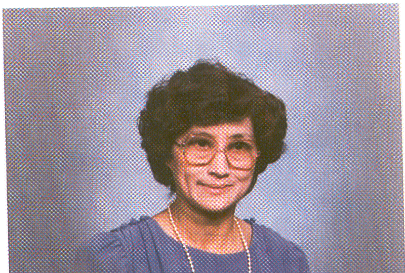
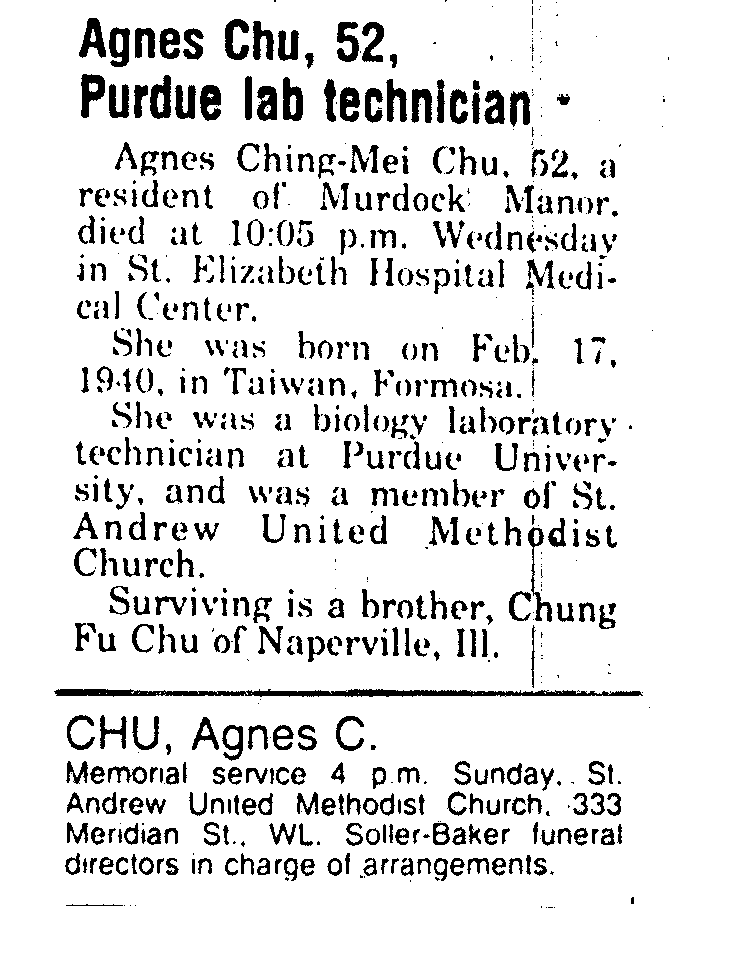

|  |
February 17, 1940 to May 29, 1992
Relationship to St. Andrew: Agnes was a Member of St. Andrew.
Family: Agnes was born in Taiwan, Formosa and has a brother Chung Fu Chu.
Recognitions: Agnes was a laboratory technician at Purdue University.
Memorials: Gifts were placed in the General Memorial Fund.
|  |